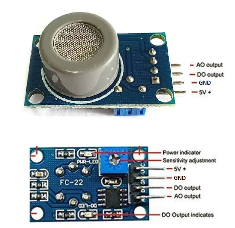

Clean School Zones
Low-cost sensors for school bus idling and AC efficiency.
1
Outside the bus
exhaust exposure at the gate
2
Inside the cabin
the air the children breathe
goal: find repeat idlers, trigger repairs
What to build first.
low payoffhigh payoff
URGENT
Pilot: CO spikes and idling alerts
STRATEGIC
Fleet policy, operator scores, city reporting
OPTIONAL
Dashboard polish, badges, notes
AVOID
Prediction models before the data is good
easy to buildhard to build
the outside sensor
MQ-7B carbon monoxide sensor
10–500ppmCO range
5Vsimple analog circuit
CO + GPSmaps idling hot spots
Winsen MQ-7B specifications. Not a certified emissions tester, so it needs calibration.

Three things that must hold.
01
The cheap sensor tracks real exposure
02
Heat, vibration and dust don't distort it
03